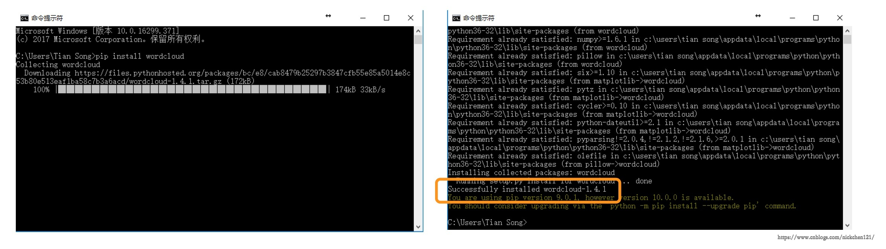
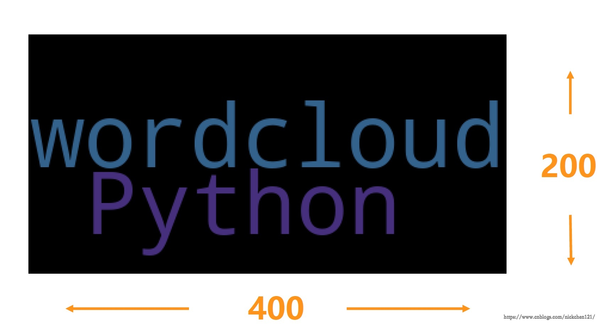
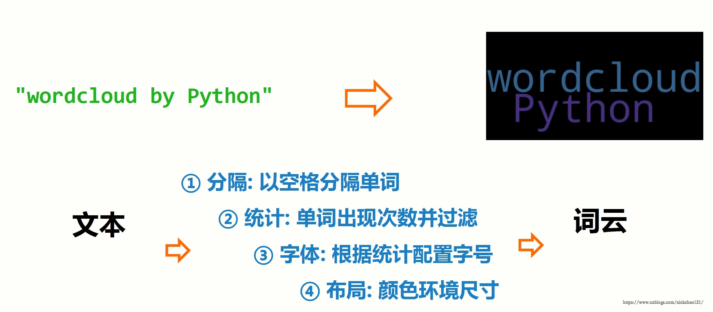

全文转载于'https://www.cnblogs.com/nickchen121/p/11208274.html#autoid-0-0-0'
wordcloud是优秀的词云展示第三方库

| 方法 | 描述 |
|---|---|
| w.generate(txt) | 向WordCloud对象w中加载文本txt，w.generate("Python and WordCloud") |
| w.to_file(filename) | 将词云输出为图像文件，.png或.jpg?x-oss-process=style/watermark格式，w.to_file("outfile.png") |
import wordcloud
w = wordcloud.WordCloud()
w.generate("Python and WordCloud")
c.to_file("pywordcloud.png")

| 参数 | 描述 |
|---|---|
| width | 指定词云对象生成图片的宽度，默认400像素 |
| height | 指定词云对象生成图片的高度，默认200像素 |
| min_font_size | 指定词云中字体的最小字号，默认4号 |
| max_font_size | 指定词云中字体的最大字号，根据高度自动调节 |
| font_step | 指定词云中字体字号的步进间隔，默认为1 |
| font_path | 指定字体文件的路径，默认None |
| max_words | 指定词云显示的最大单词数量，默认200 |
| stop_words | 指定词云的排除词列表，即不显示的单词列表 |
| mask | 指定词云形状，默认为长方形，需要引用imread()函数 |
| background_color | 指定词云图片的背景颜色，默认为黑色 |
# mask
from imageio import imread
mk=imread("pic.png")
w=wordcloud.WordCloud(mask=mk)中文需要先分词并组成空格分隔字符串
import jieba
import wordcloud
txt = "Nick 是上海虹桥最帅的男人，没有之一，因为他就是最帅的"
w = wordcloud.WordCloud( width=1000,\
font_path="/Library/Fonts/Heiti.ttc",height=700)
w.generate(" ".join(jieba.lcut(txt)))
w.to_file("pywcloud.png")
import jieba
import wordcloud
txt = "Nick 是上海虹桥最帅的男人，没有之一，因为他就是最帅的"
w = wordcloud.WordCloud( width=1000,\
font_path="/Library/Fonts/Heiti.ttc",height=700)
w.generate(" ".join(jieba.lcut(txt)))
w.to_file("pywcloud.png")
Building prefix dict from the default dictionary ...
Loading model from cache /var/folders/mh/krrg51957cqgl0rhgnwyylvc0000gn/T/jieba.cache
Loading model cost 1.047 seconds.
Prefix dict has been built succesfully.
{kind=link}